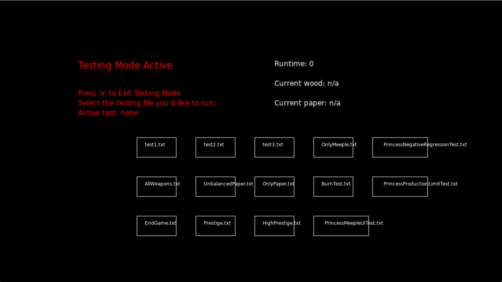
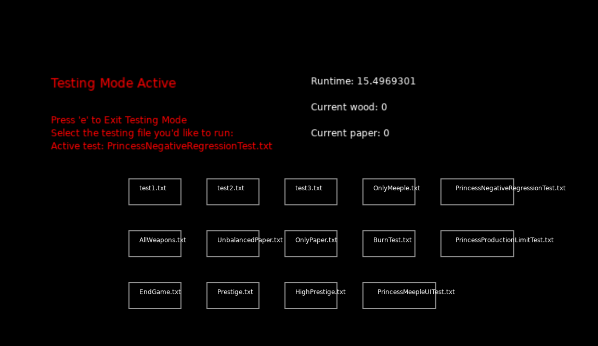
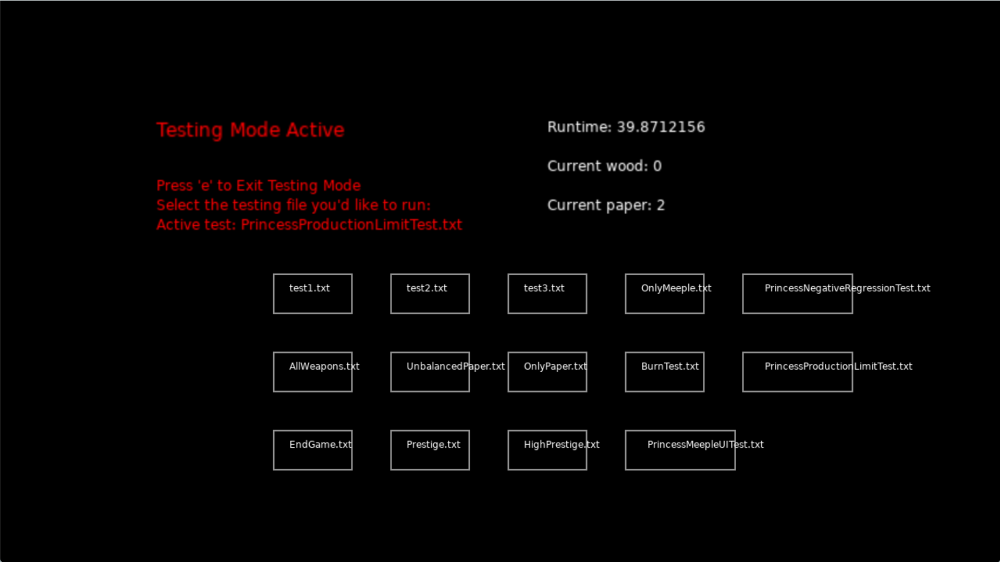

Testing Strategies
Where to Find My Work
This sample is located in the PaperGame repository on the
testing-suite-princess branch. The main files are
handlers/testingHandler.lua, items_list.lua,
tests/PrincessMeepleUITest.txt,
tests/PrincessNegativeRegressionTest.txt, and
tests/PrincessProductionLimitTest.txt.
My Contributions
I created three new scenario-based test files and added validation checks for meeple progression and production behavior. I used the existing testing system built by my teammates as a foundation, but the new test states, testing buttons, and assertions discussed here were my own contributions.
Code Samples
tests/PrincessMeepleUITest.txt
1000
1000
0
0
3
2
1
100
3
3
3
0
0
0
0
1000
1000
1
0handlers/testingHandler.lua
assert(
forestMeeples + factoryMeeples <= totalMeeples,
"Assigned meeples should not exceed total meeples."
)items_list.lua
PrincessMeepleUI =
TestingButton(
800, 550,
140, 50,
"PrincessMeepleUITest.txt"
)Description
Testing Interface Screenshots
The screenshots below show the in-game testing mode used to load scenario-based save states and validate gameplay behavior.

Testing mode allows predefined save-state scenarios to be loaded directly through clickable buttons inside the game.

This test validates that meeple assignments remain logically valid and that production systems continue functioning correctly.

This regression test verifies that empty or new-game states do not produce invalid negative or nil values.

This production limit test verifies that paper production cannot exceed the available wood supply.
The component I tested was the meeple progression and production system. Meeples are
worker units assigned either to the forest or the factory, so they directly affect wood
production, paper production, and overall gameplay. The tests I created are
scenario-based regression tests that use predefined save states and verify that the
game still behaves correctly after new systems or interface changes are added. Each test
file stores a complete gameplay state as numerical values loaded at runtime. For example,
in PrincessMeepleUITest.txt, the values 3, 2,
and 1 represent the total number of meeples, forest meeples, and factory
meeples. This creates a valid progression state where the assigned meeples equal the
total number available. The assertions in testingHandler.lua then verify
that assigned meeples never exceed the total meeple count and that production
multipliers derived from those values remain logically valid.
The other tests target different gameplay conditions.
PrincessNegativeRegressionTest.txt creates an empty starting state where all
resource values are zero or positive so the game can verify that no invalid negative or
nil values appear during initialization.
PrincessProductionLimitTest.txt creates a production scenario with low
wood values and active paper production to verify that the game does not allow
paper generation beyond the available wood supply. Together, these tests cover
progression consistency, production calculations, and save-state validation. I did not
automate tests for rendering correctness, hitbox alignment, or UI layout because those
systems depend on graphical output inside the Love2D engine and were more effectively
verified through manual interaction and visual debugging during gameplay.